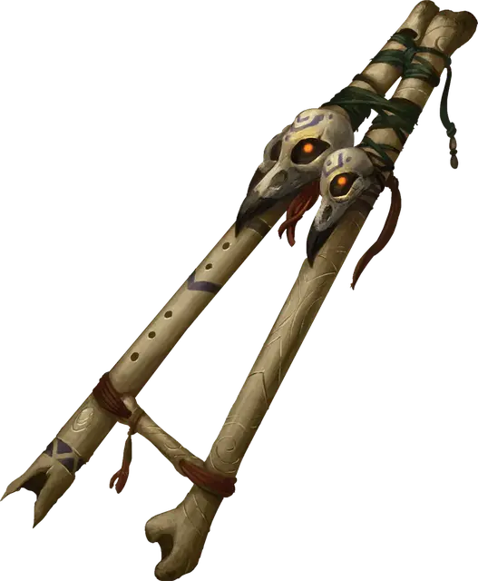

Свирель ужаса
Pipes of Haunting
Чудесный предмет, необычный

Рекомендованная стоимость 400 зм
Эта свирель имеет 3 заряда и восстанавливает 1к3 потраченных зарядов на каждом рассвете. Действием Магия вы можете сыграть на ней и потратить 1 заряд, создавая жуткую, завораживающую мелодию. Каждое существо по вашему выбору в пределах 30 футов от вас должно преуспеть в Спасброске Мудрости Сл 15, иначе получит состояние Испуганный на 1 минуту. Провалившее спасбросок существо повторяет его в конце каждого своего хода, при успехе оканчивая на себе этот эффект. Преуспевшее в спасброске существо получает Иммунитет к эффекту этой свирели на 24 часа.